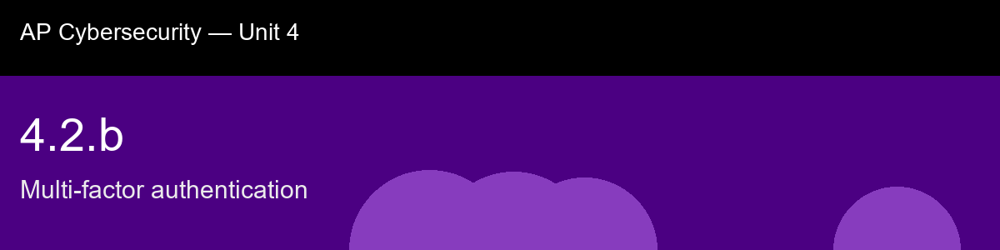

4.2.b recap, Multi-factor authentication
Nice work today. Here's what to lock in:
- Recap handout:
post-lecture-handout.docx
- Simulation: SimLab
- Self-check quiz: due before next class
The big picture: The ranking from SMS codes up through FIDO2 hardware keys is really a story about which attacks each method was never designed to survive, and it's worth tracing the causal chain rather than memorizing the order: SMS fails because a phone number is a carrier-controlled abstraction that can be SIM-swapped away from the phone itself; TOTP fixes that by binding the secret to the device, but a human is still capable of typing a valid code into a fake site, so phishing-relay attacks still work; push notifications fix the typing problem but open a new one, MFA fatigue, where the attacker just spams approval requests until an exhausted user taps yes. FIDO2/WebAuthn is the only method here that closes all three gaps at once, and it does it structurally, not through user vigilance: the cryptographic handshake is bound to the exact domain, so the key simply refuses to respond to a perfect-looking fake page. That's worth connecting back to 4.1.b's evil-maid-style lesson about when a control is active, MFA methods aren't ranked by how strong the secret is, they're ranked by how many different tricks a human being can be fooled into cooperating with.
Key terms to lock in:
- Multi-factor authentication (MFA), requiring proof from two or more distinct factor categories before granting access.
- Factor category, one of: knowledge (something you know), possession (something you have), inherence (something you are).
- TOTP / HOTP, Time-based / HMAC-based One-Time Password; authenticator-app codes generated from a shared secret.
- FIDO2 / WebAuthn, an open standard for hardware/platform security keys that cryptographically bind authentication to the requesting website domain, making it phishing-resistant.
- SIM swapping, an attacker fraudulently transfers a victim's phone number to a attacker-controlled SIM card, intercepting SMS-based codes.
- MFA fatigue (push bombing), repeatedly sending push-approval prompts until the user approves one out of annoyance or confusion.
- Phishing-resistant authentication, a factor that cannot be captured and replayed by a fake login page, such as a FIDO2/WebAuthn hardware key.
Common misconceptions -- don't fall for these:
- "Entering two different passwords is two-factor authentication." → Both are "something you know", the same factor category twice. True MFA requires two different categories.
- "SMS-based MFA is just as strong as an authenticator app or hardware key." → SMS codes travel through the mobile carrier network and are vulnerable to SIM swapping and relay/phishing attacks that authenticator apps avoid, and that hardware keys are specifically designed to resist.
- "Approving a push notification always means the real user is logging in." → MFA fatigue attacks exploit the fact that a user may approve a prompt they did not initiate, just to stop repeated notifications; approval is not proof of intent unless the prompt shows context the user verifies.
Learning objective(s): 4.2.A, 4.2.B

## 4.2.b recap, Multi-factor authentication
Nice work today. Here's what to lock in:
- Recap handout: `post-lecture-handout.docx`
- Simulation: SimLab
- Self-check quiz: due before next class
**The big picture:** The ranking from SMS codes up through FIDO2 hardware keys is really a story about which attacks each method was never designed to survive, and it's worth tracing the causal chain rather than memorizing the order: SMS fails because a phone *number* is a carrier-controlled abstraction that can be SIM-swapped away from the phone itself; TOTP fixes that by binding the secret to the device, but a human is still capable of typing a valid code into a fake site, so phishing-relay attacks still work; push notifications fix the typing problem but open a new one, MFA fatigue, where the attacker just spams approval requests until an exhausted user taps yes. FIDO2/WebAuthn is the only method here that closes all three gaps at once, and it does it structurally, not through user vigilance: the cryptographic handshake is bound to the exact domain, so the key simply refuses to respond to a perfect-looking fake page. That's worth connecting back to 4.1.b's evil-maid-style lesson about *when* a control is active, MFA methods aren't ranked by how strong the secret is, they're ranked by how many different tricks a human being can be fooled into cooperating with.
**Key terms to lock in:**
- **Multi-factor authentication (MFA)**, requiring proof from two or more distinct factor categories before granting access.
- **Factor category**, one of: knowledge (something you know), possession (something you have), inherence (something you are).
- **TOTP / HOTP**, Time-based / HMAC-based One-Time Password; authenticator-app codes generated from a shared secret.
- **FIDO2 / WebAuthn**, an open standard for hardware/platform security keys that cryptographically bind authentication to the requesting website domain, making it phishing-resistant.
- **SIM swapping**, an attacker fraudulently transfers a victim's phone number to a attacker-controlled SIM card, intercepting SMS-based codes.
- **MFA fatigue (push bombing)**, repeatedly sending push-approval prompts until the user approves one out of annoyance or confusion.
- **Phishing-resistant authentication**, a factor that cannot be captured and replayed by a fake login page, such as a FIDO2/WebAuthn hardware key.
**Common misconceptions -- don't fall for these:**
- "Entering two different passwords is two-factor authentication." → Both are "something you know", the same factor category twice. True MFA requires two *different* categories.
- "SMS-based MFA is just as strong as an authenticator app or hardware key." → SMS codes travel through the mobile carrier network and are vulnerable to SIM swapping and relay/phishing attacks that authenticator apps avoid, and that hardware keys are specifically designed to resist.
- "Approving a push notification always means the real user is logging in." → MFA fatigue attacks exploit the fact that a user may approve a prompt they did not initiate, just to stop repeated notifications; approval is not proof of intent unless the prompt shows context the user verifies.
**Learning objective(s):** 4.2.A, 4.2.B